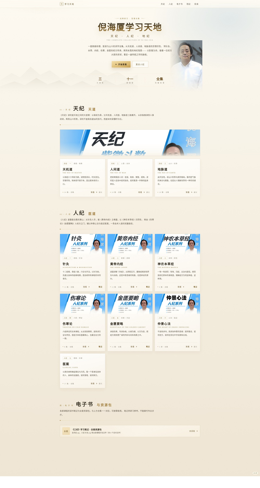

PAIN 01 / 资料零散
痛点示意 · 非产品界面
视频 · 未整理
PDF 讲义
链接 · 失效
笔记碎片
网盘 · 版本?
合集 · 分散
截图 · 模糊
转存 · 过期
音频 · 缺集
目录 · 手抄
书签 · 找不到
重复收藏
越学越散？
PAIN 02 / 版本混乱
痛点示意 · 非产品界面
针灸 · 全集
针灸 · 另一版
内经 · 谁的课
伤寒 · 缺集?
本草 · 顺序?
480i
720p
1080p
无删减
删减版
PAIN 03 / 路径不清
概念图解 · 产品无进度功能
走到一半，又退回去
进度条仅为视觉隐喻
PAIN 04 / 查讲脱节
痛点示意 · 源码无搜索框与检索
⌕
合
讲义文档 · 在另一个窗口
《针灸》读书笔记
《黄帝内经》读书笔记
……
视频与讲义，对不上
SOLUTION 01 / 真实产品界面
天纪
人纪
地纪
SOLUTION 02 / 课程全貌
信息图 · 节点与封面为源码真实内容
人纪 · 七部
天纪 · 三路
针灸
黄帝内经
神农本草经
伤寒论
金匮要略
仲景心法
医案
天机道
人间道
地脉道
地纪 · 未竟
SOLUTION 03 / 学习路径
路径图为信息图 · 顺序按源码「如何开始」
针灸
黄帝内经
神农本草经
伤寒论
金匮要略
按倪师教学逻辑排好，不必自己拼顺序
源码「如何开始」建议顺序
针灸 → 黄帝内经 → 神农本草经 → 伤寒 / 金匮
天纪可并行旁听，不必求快
SOLUTION 04 / 从针灸起手
信息图 · 封面为产品真实素材
针灸
黄帝内经
神农本草经
观看
针灸
观看
黄帝内经
观看
神农本草经
SOLUTION 05 / 再进方证
信息图 · 封面为产品真实素材
观看
伤寒论
观看
金匮要略
五部人纪，走完一条线
SOLUTION 06 / 双线并行
信息图 · 天纪并行表述源自源码
人纪 · 五部
天纪 · 三路
并行旁听 · 不必求快
SOLUTION 07 / 真实产品界面

针灸 · 分集
第 01 集
48:20
第 02 集
51:04
第 03 集
46:38
第 04 集
49:12
第 05 集
52:06
点「观看」· App 内原生播放
底版为本地源码渲染的真实截图；
仅「分集面板」这一会动的组件按源码 .sheet 样式叠加重建。
SOLUTION 08 / 真实产品界面
天纪 · 天机道
观看
讲义
人纪 · 针灸
观看
笔记
地纪 · 未竟之章
观看
讲义
→ B 站视频合集
→ 金山文档 · 讲义
→ 会员购 · 笔记
入口分布按源码真实呈现，不虚构站内笔记编辑器
SOLUTION 09 / 同一页对得上
针灸 · 分集
第 01 集
48:20
第 02 集
51:04
第 03 集
46:38
第 04 集
49:12
电子书 · 读书笔记
《针灸》读书笔记
《针灸》讲义
《黄帝内经》读书笔记
《三纪》全套资源包
共 5 本读书笔记
示意 · 非检索结果
合谷
手阳明大肠经
产品提供导航式定位；词卡仅为「随查随用」的视觉隐喻
RESULT 01 / 不再纠结从哪开始
信息图 · 进度指示非产品功能
针灸
黄帝内经
神农本草经
伤寒论
金匮要略
从哪开始，一眼就看见
RESULT 02 / 反复温习不丢线
信息图 · 不暗示产品有进度存档
伤寒论 · 再回来
节点始终点亮，与 F03 的「褪色倒退」呼应
RESULT 03 / 散点收束
概念图解 · 与 F01 首尾对照
一条线，串起散落的课
倪海厦学习天地
倪海厦学习天地
bilibili.com/toy/sanji
★
收藏这一页，随时回来
本页仅提供检索与导航，不存储、不转载任何课程文件。
内容涉及医学，仅供研习参考，不能替代专业诊疗。
倪师资料铺天盖地，
越学越散
？
视频散落各处，
版本还乱
。
学了后面，
忘了前面
。
查个穴位、找个方剂，
翻遍全网
。
一页
收齐人纪与天纪。
七部
人纪，
三路
天纪。
顺序
按倪师教学逻辑
排好
。
针灸起手，内经、本草接续。
再进伤寒、金匮学
方证
。
天纪并行，
不必求快
。
点课程，App 内
直接播
。
讲义、笔记就在
一旁
。
哪一集、哪份讲义，
一眼
定位。
路径清晰
，不再纠结从哪开始。
随查随用，
反复温习
。
一条线
，把散落的课串起来。
打开
倪海厦学习天地
。
收藏这一页，
随时回来
。